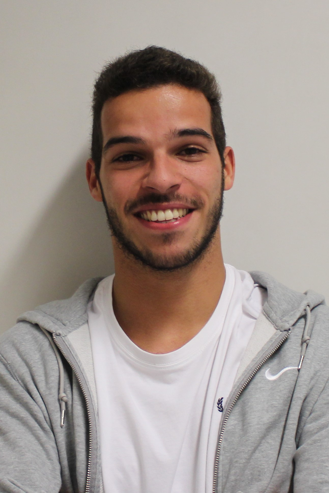

-
Abel Tiago
-

Francisco Rodrigues
O departamento recreativo compromete-se a trazer à comunidade estudantil da FEUP atividades e eventos de lazer ao longo de todo o ano letivo.
Neste mandato, a Lista T tem em vista dinamizar e levar a outro nível as atividades já existentes que estão associadas a este departamento. Atividades estas, que já se tornam tradição e são um marco para os nossos estudantes, entre as quais se destacam as seguintes:
- Arraial d’Engenharia- Este evento é a maior receção ao estudante em toda a Academia. Aprimorado de edição para edição, sempre com um cartaz diversificado, o Arraial d’Engenharia é uma paragem incontornável para todos os estudantes, que pelos preços académicos têm a oportunidade de viver experiências memoráveis nesta festa académica que atinge uma escala nacional.
- FEUPCaffé- Com o verdadeiro espírito universitário e entrada gratuita, é assim que o FEUPCaffé se torna num evento sólido, impossível de ignorar nas quintas-feiras académicas do Porto. Grande festa, com muita música e diversão garantida neste que é o nosso ponto de encontro obrigatório na noite da Invicta.
- Noites d’Engenharia- Depois da primeira época de exames e para entrar em grande no segundo semestre chegam as Noites d’Engenharia que, sempre contando com grandes artistas, elevam o nome da nossa Associação na vida noturna da cidade.
- Concurso de DJs- Para os mais talentosos no mundo da música é-lhes dada a oportunidade de ingressar nesta competição, onde serão avaliados pela sua capacidade de comandar a pista de dança ao som do seu ritmo, com a possibilidade de poderem até vir a actuar no Arraial d’Engenharia.
- Pool Party- Acabam as férias de Verão, começa o ano letivo, mas com ele não pode acabar a boa disposição. Aparece assim a Pool Party, tendo também em vista a integração dos novos estudantes da faculdade, esta atividade aproveita o bom tempo para começar o ano da melhor maneira.
- Super Mega FEUPCaffé - Este evento engloba todas as características de um FeupCaffé, mas com a particularidade de ser maior e mais diversificado. Com atividades diurnas, tais como torneios e espetáculos de comédia, seguido de um jantar de convívio. A culminar o dia sucedem-se as atividades noturnas, a que o FEUPCaffé já nos habituou. É desta forma que o Super Mega FEUPCaffé é a escolha de eleição dos nossos estudantes, que serve preparativo para a Queima das Fitas.
- Jantares Temáticos - Para além do tradicional Jantar de Natal, é um objetivo realizar mais jantares, cada qual com a sua temática por forma a criar um ambiente descontraído e divertido que incentive o convívio entre os nossos estudantes.
Para além de todas estas atividades temos também planos para:
- Torneios de videojogos;
- Transmissão de jogos de futebol;
- Snowtrip;
Dado que todo este programa foi construído a pensar na comunidade estudantil, queremos que a linha de comunicação com a mesma esteja sempre aberta, como tal, todo o feedback será apreciado, bem como todas as ideias que nos sejam propostas.